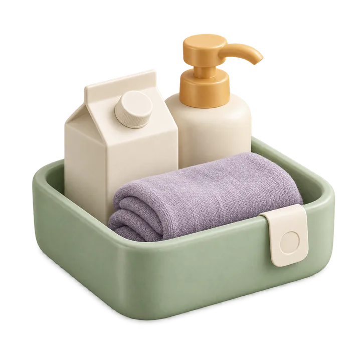

记下第一件
填个名称就能保存，照片和其他信息可以慢慢补。
留下它的位置
从房间到柜子、抽屉，下次不用凭记忆找。
到期前想起来
按包装记下日期，需要时再开启临期提醒。
使用帮助
从一件物品开始。
先记下一件常用物品，再慢慢整理。选一个你正想做的事，点开就能看到具体办法。
日常整理
记下第一件物品
从一件容易忘记放在哪里的东西开始，比如备用钥匙。打开“物品”页，点右上角的“＋”，选择“手工录入”，输入“备用钥匙”。
点“存放位置”，选好它所在的房间、柜子或抽屉。不确定也没关系，可以先留空，之后再补。
有到期日的物品可以顺手记上日期；钥匙这类物品不用填写。检查后保存，这件物品就会出现在你的目录里。照片和备注都可以以后再加。
下次，怎么找到它？
在“物品”页搜索名称，比如“钥匙”，就能看到它放在哪里。记不清名称时，也可以搜位置，或进入“位置”页逐层找。
位置可以按“厨房 › 冰箱 › 冷藏层”这样建立，最多三级。从最常用的几个位置开始就好，不必一次整理完整个家。遇到同名的柜子，记得看完整路径。
把东西换了地方？打开它的详情，点“编辑物品”，重新选择存放位置并保存。这样下次找到的就是新位置。
给食物和日用品记个到期日
添加或编辑物品时，点“到期日”，按包装上的日期填写。比如一盒牛奶标注 10 月 25 日到期，就选对应的年、月、日；看不清或没有日期时可以留空。
打开“到期”页，可以分别查看已过期、今天到期、未来 1 至 7 天内临期的物品。没有填写日期的物品也会单独列出。
想提前收到通知，再到“设置 → 临期提醒”开启。到期列表始终按 7 天范围显示，调整通知的提前天数不会改变这个范围。
照片与提醒
拍张照，再核对一下
在“物品”页点“拍照录入”，拍摄一件物品或从相册挑一张照片。让物品名称和日期尽量清楚，反光的包装可以换个角度再拍。
选好照片后，有处会在本机寻找名称和日期。点名称候选填入草稿；日期要先核对它是生产日期、到期日，还是最佳使用期，再确认使用。只有生产日期和明确保质期都读到时，才可能提供带依据的推算，请按包装核实。
点“核对并保存”，补上存放位置、检查名称和日期，最后点“确认并保存”。没有识别到也没关系，可以直接手工填写；不确定的日期可以留空。有处不会根据外观猜保质期，拍完也不会直接保存。
拍不了照时，可以先选相册或点“手工填写”。若想恢复权限，到 iPhone 的“设置”中允许有处使用相机。换照片或重新识别不会覆盖你已经选好的字段，确认前记得再看一眼。
说一句，把物品记下来
点“语音录入”，准备好后点“开始说话”。可以这样说：“燕麦奶放在厨房冰箱，明天到期。”一次只描述一件，位置尽量使用你已建立的名称。
说完点“停止并完成转写”，先看看文字有没有听错，也可以直接修改。核对下方的名称、完整位置和日期候选，点选确认后，再进入表单保存。录音不会直接新增物品。
“明天”“三天后”等日期按这次开始输入时的日期计算，页面会显示参照日期。说具体日期时请带上年份；多个日期、同名位置或不确定的表达需要你自行确认，不会替你猜。
语音只在本机处理，不保存录音文件。设备不支持、语音资源不可用或权限未允许时，可以在文字框里输入，也能直接“手工填写”。离开页面、进入后台或音频中断后会停止录音，不会自动继续。
让有处提前提醒我
先打开“设置 → 临期提醒”，启用提醒并允许系统通知。默认在到期前 7 天、当地时间上午 9 点提醒；你可以改为提前 1 天或 3 天，也可以换个时间，修改后点“保存提醒规则”。
没收到时，先看看这页的“已安排”数量和覆盖日期。若有错误，点“重新核对提醒”；再到 iOS 的“设置 → 通知 → 有处”，检查横幅和声音，也留意专注模式或通知摘要。
同一时刻的几件物品会合成一条通知，每件物品在同一到期日只提醒一次。若显示还有提醒待补排，再次打开有处时会优先安排较近日期；打开到期列表也能随时查看。
已经过期，或到期日内已没有可安排时间的物品，不会补发提醒。不想接收通知也没关系，手工管理和到期列表仍能使用。
数据与问题
换手机前，先看看数据存在哪里
目前，你的物品、位置和照片都保存在这台 iPhone 上。有处还没有账号云同步，在另一台设备安装后不会自动出现这些记录。
换机或删除 App 前，先在系统中确认设备备份是否完成。可以使用 iOS 提供的设备备份与迁移方式；具体能恢复哪些内容，以系统实际备份和恢复结果为准。
有处暂不提供应用内导出、导入。如果只是遇到保存问题，先保留表单内容并联系支持，不要用删除 App 或清空数据来尝试修复。
填好了，却没能保存
先别关掉表单。保存失败时，已填写的内容会留在当前页面；看一下提示，检查是否填了名称、所选位置是否还存在，以及 iPhone 是否有足够的存储空间，再试一次。
如果提示物品已被修改，先复制或记下刚才填写的内容，再退出并重新打开这件物品。核对最新记录后继续编辑，避免覆盖已有修改。
保存成功后，表单会关闭。若仍提示失败，可以在下方“联系支持”里整理操作过程发给我；不必附上你的物品照片或私人备注。
不用的物品和位置，怎么清理？
一件物品不再需要时，打开它的详情，使用删除操作即可。删除会移除这条记录和它在有处中的照片副本，不会删掉系统相册里的原图。
只想整理位置时，可以删除某个位置，并为里面的物品选择新的去处，或改为“未指定”。删除位置不会连带删除物品。
想从头开始，可到“设置 → 本地数据”选择“清空本地数据”。确认后会清空物品、照片和位置，并重置提醒，应用内无法撤销。历史系统备份需要另外管理。
网页打不开，还能在哪里看帮助？
你现在看到的这些说明可以离线阅读，不用等网页加载。隐私政策也在有处的设置里。
点开网页时，有处会优先尝试 GitHub Pages，连接失败或等了约 4 秒仍无响应时换用 GitCode。若浏览器还是打不开，返回帮助页，展开“GitCode 备用网页”直接打开即可。
还没有解决的话，可以通过下方邮箱联系我。写清你在哪一步遇到了什么情况就好；“联系支持”里的反馈页面也能帮你整理文字，由你检查、复制后自行发送。
进一步帮助
还有想问的？
告诉我你在哪一步遇到了什么情况。比如：“改了到期日，提醒页却还显示旧日期。”附上应用和 iOS 版本会更方便排查，不必发送物品照片或私人备注。
bearrabbit1002@outlook.com 阅读隐私政策 ↗